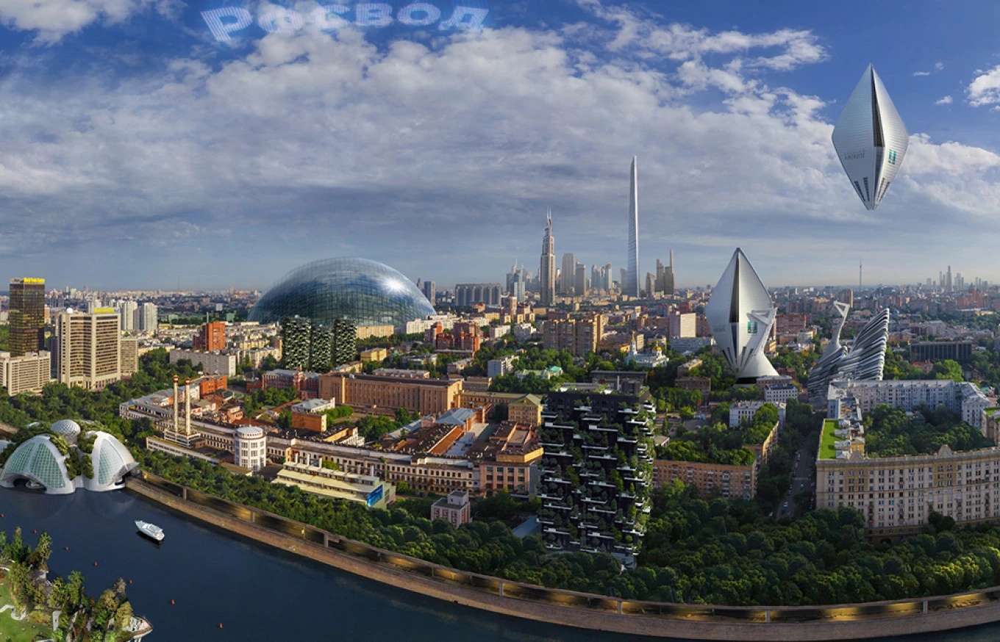

16
predicciones de Earth 2050 sobre Moscú analizadas por el grupo.
#5
La IA reconstruye la historia en 3D, incluso lo que nunca pasó.
#3
Crece la desigualdad: solo quienes tienen acceso alimentan esa historia.
Una interfaz para
Memoriapropia
¿Qué pasa con tus recuerdos cuando una IA puede reescribir el pasado? Esta propuesta obliga a la máquina a pedirte permiso primero.
En la Moscú de 2050 la realidad es un asunto de acceso. La ciudad crece en vertical, con domos climáticos, drones y avatares, pero no todos viven el mismo futuro.
Una IA reconstruye el pasado con lo que la gente sube y llena los vacíos con «lo que pudo haber sido». La realidad es mediada, porque el pasado se conoce por lo que un algoritmo decide recrear, y frágil, porque depende de sistemas que nadie entiende ni controla.
¿Cómo puede el diseño gráfico devolverles a las personas el control sobre cómo se cuenta su propio pasado?
Memoria propia es una página web que simula la interfaz de 2050: antes de usar un recuerdo, la IA muestra qué cambiaría y cuánto lo alteraría. La persona decide. Nada se toma por defecto.
El recorrido es un scroll que se detiene al final de cada sección: no se avanza sin terminar de leer. Pruébala en la pantalla del exhibidor.

Solicitud— La IA pide permiso
La IA avisa qué recuerdo quiere usar y para qué. En la portada, una foto de Moscú 2050 crece hasta llenar la pantalla y presenta el escenario en tres ideas.

Comparación— Original vs. versión IA
Se arrastra una línea entre la postal en sepia y la versión generada. Cada cambio queda marcado con un punto ámbar: colores inventados, daños borrados, cielo nuevo, gente añadida.

Nivel de IA— De 1 a 100 %
Una regla define cuánto puede intervenir la máquina: restaurar, completar, reinterpretar o reconstruir. La imagen cambia en vivo.
Asistencia humana— Una persona revisa contigo
Antes de que la IA use el recuerdo, alguien de carne y hueso lo revisa: un familiar, el archivista del barrio o el colectivo de memoria. Sin su firma, nada avanza.
ProtegidoDecisión— Tú decides y firmas
Conservar el original, aceptar con marca de IA o no reconstruir. Si no respondes, el recuerdo no se usa.
Vilém Flusser
Abrir la caja negra
- Los aparatos son cajas negras: vemos lo que entra y lo que sale, no cómo deciden.
- La IA de 2050 es una caja negra que reescribe la memoria.
- La interfaz la abre: muestra cada cambio y el % generado.
- El usuario deja de ser funcionario del aparato y juega contra él: puede negarse.
Jarrett Fuller
Lo que la IA no calcula
- Punto de vista: la IA sabe qué pasó, no qué significa para quien lo vivió.
- Historia: en el centro hay una persona real, con nombre y firma.
- Fricción: una pausa a propósito para ver, entender y decidir.
- Intención gráfica: claridad editorial, color que avisa y movimiento que guía.
Color
Base clara, petróleo, teal para la acción y ámbar solo para lo que cambió la IA.
Tipografía
General Sans, sans serif europea y legible. Titulares grandes en peso regular.
Diagramación
Retícula de 12 columnas, márgenes de 48 px y secciones de pantalla completa que se detienen al terminar.